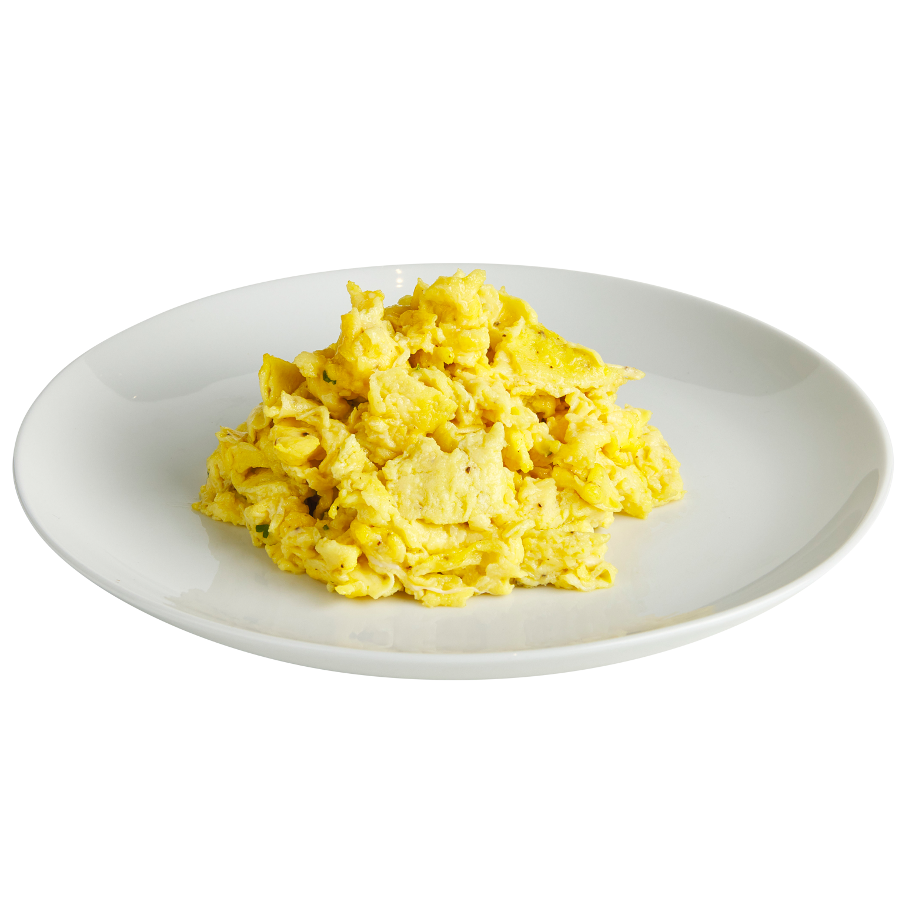

Scrambled eggs

Description
Scrambled eggs are a classic breakfast dish made by whisking eggs and cooking them gently in a pan until they are soft and creamy.
Originating from early cooking practices, this simple yet versatile dish is enjoyed worldwide and can be customized with various seasonings and additions.
Ingredients
- 4 large eggs
- 2 tablespoons of milk or cream (optional, for creaminess)
- 1 tablespoon of butter
- 2g of salt
- 2g of pepper
- (Optional) Chopped herbs, cheese, or vegetables (e.g., chives, bell peppers, onions)
Steps
- Prepare the Eggs: Crack the eggs into a bowl. If using, add milk or cream to make the eggs fluffier. Season with a pinch of salt and pepper.
Whisk the mixture until well combined and slightly frothy.
- Heat the Pan: Place a non-stick skillet or frying pan over medium-low heat and add the butter or oil. Allow it to melt and become slightly bubbly, but not browned.
- Stir Gently: Using a spatula, gently stir the eggs from the edges to the center. Continue to stir occasionally, allowing the eggs to cook evenly and form soft curds.
- Add Extras: If adding cheese, herbs, or vegetables, sprinkle them in during the last minute of cooking.
- Finish and Serve: When the eggs are mostly cooked but still slightly moist, remove the pan from the heat.
The residual heat will finish cooking the eggs. Serve immediately for the best texture and flavor.
Check our other recipes
Carbonara
Scrambled aggs
Back to home page